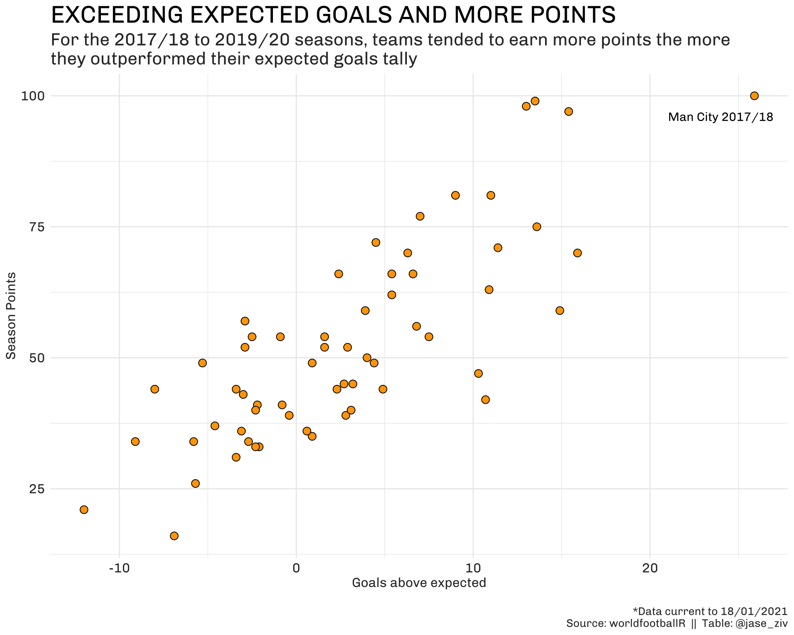
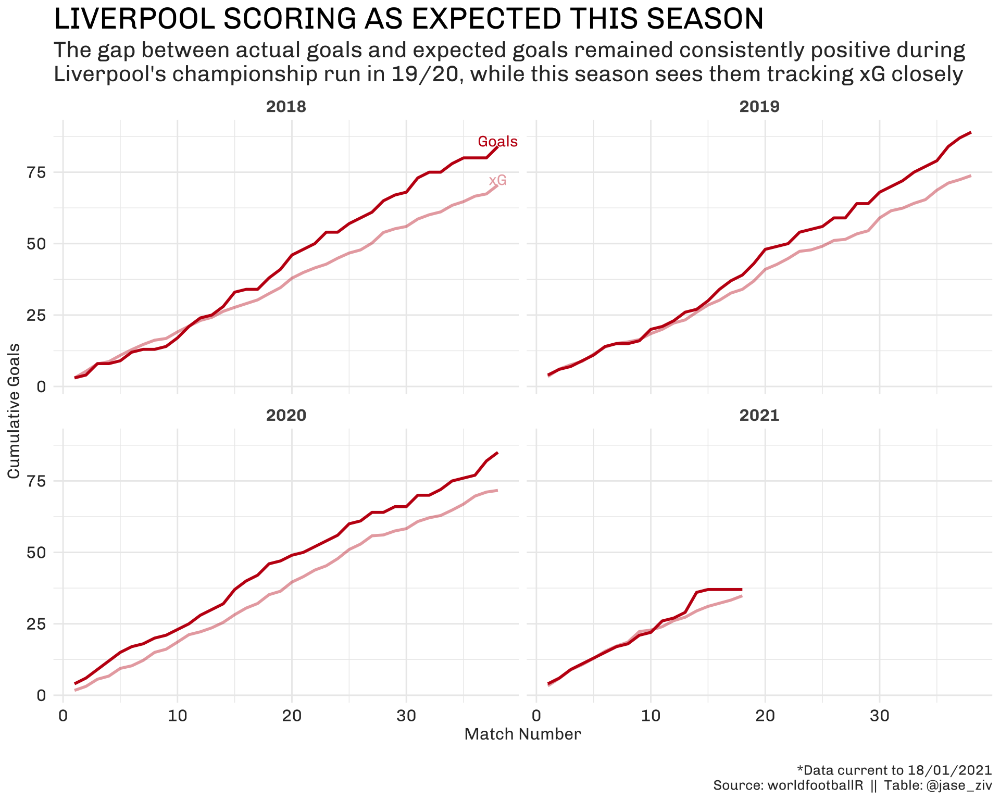

This post continues a series of posts that aims to showcase the new worldfootballR R package for extracting world football (soccer) data from popular data site fbref.com.

This post will aim to analyse expected goals and actual goals, primarily focusing on Liverpool.
This season sees Liverpool in a struggle with a few teams in the hope of going back-to-back. I want to see if there is a difference in how the Reds are scoring this season as opposed to the last few seasons.
Extract Data Using worldfootballR
As always, we first start by installing the package if you haven’t already done so and loading any libraries necessary for the analysis.
devtools::install_github("JaseZiv/worldfootballR")
library(tidyverse)
library(worldfootballR)To get match results, including goals and xG data, we can use the function fb_match_results(). Because we want it for the Men’s Premier League, we pass the following values to the function’s arguments:
xg_data <- fb_match_results(country = "ENG", gender = "M", season_end_year = c(2018:2021))We can also see what the data looks like:
Rows: 1,520
Columns: 19
$ Competition_Name <chr> "Premier League", "Premier League", "Premier League",…
$ Gender <chr> "M", "M", "M", "M", "M", "M", "M", "M", "M", "M", "M"…
$ Country <chr> "ENG", "ENG", "ENG", "ENG", "ENG", "ENG", "ENG", "ENG…
$ Season_End_Year <int> 2018, 2018, 2018, 2018, 2018, 2018, 2018, 2018, 2018,…
$ Round <lgl> NA, NA, NA, NA, NA, NA, NA, NA, NA, NA, NA, NA, NA, N…
$ Wk <int> 1, 1, 1, 1, 1, 1, 1, 1, 1, 1, 2, 2, 2, 2, 2, 2, 2, 2,…
$ Day <chr> "Fri", "Sat", "Sat", "Sat", "Sat", "Sat", "Sat", "Sat…
$ Date <date> 2017-08-11, 2017-08-12, 2017-08-12, 2017-08-12, 2017…
$ Time <chr> "19:45", "12:30", "15:00", "15:00", "15:00", "15:00",…
$ Home <chr> "Arsenal", "Watford", "West Brom", "Everton", "Southa…
$ HomeGoals <dbl> 4, 3, 1, 1, 0, 2, 0, 0, 0, 4, 0, 3, 2, 0, 0, 1, 1, 1,…
$ Home_xG <dbl> 2.1, 2.0, 1.2, 0.4, 2.1, 1.0, 1.0, 0.5, 0.5, 2.1, 0.4…
$ Away <chr> "Leicester City", "Liverpool", "Bournemouth", "Stoke …
$ AwayGoals <dbl> 3, 3, 0, 0, 0, 3, 3, 2, 2, 0, 4, 2, 0, 2, 1, 0, 0, 0,…
$ Away_xG <dbl> 1.6, 3.0, 0.4, 0.3, 0.4, 0.8, 1.7, 1.6, 2.2, 0.6, 2.6…
$ Attendance <dbl> 59387, 20407, 25011, 39045, 31447, 41616, 25448, 3041…
$ Venue <chr> "Emirates Stadium", "Vicarage Road Stadium", "The Haw…
$ Referee <chr> "Mike Dean", "Anthony Taylor", "Robert Madley", "Niel…
$ Notes <chr> NA, NA, NA, NA, NA, NA, NA, NA, NA, NA, NA, NA, NA, N…To get season league tables (which contains goals scored for and against, and expected goals), we can use the get_season_team_stats() functions, and pass the following values to the function arguments:
end_season_summary <- fb_season_team_stats(country = "ENG", gender = "M", season_end_year = c(2018:2021), stat_type = "league_table")And inspect the data:
Rows: 80
Columns: 24
$ Competition_Name <chr> "Premier League", "Premier League", "Premier League",…
$ Gender <chr> "M", "M", "M", "M", "M", "M", "M", "M", "M", "M", "M"…
$ Country <chr> "ENG", "ENG", "ENG", "ENG", "ENG", "ENG", "ENG", "ENG…
$ Season_End_Year <int> 2020, 2020, 2020, 2020, 2020, 2020, 2020, 2020, 2020,…
$ Squad <chr> "Arsenal", "Aston Villa", "Bournemouth", "Brighton", …
$ Team_or_Opponent <chr> "team", "team", "team", "team", "team", "team", "team…
$ Rk <int> 8, 17, 18, 15, 10, 4, 14, 12, 5, 1, 2, 3, 13, 20, 9, …
$ MP <int> 38, 38, 38, 38, 38, 38, 38, 38, 38, 38, 38, 38, 38, 3…
$ W <int> 14, 9, 9, 9, 15, 20, 11, 13, 18, 32, 26, 18, 11, 5, 1…
$ D <int> 14, 8, 7, 14, 9, 6, 10, 10, 8, 3, 3, 12, 11, 6, 12, 7…
$ L <int> 10, 21, 22, 15, 14, 12, 17, 15, 12, 3, 9, 8, 16, 27, …
$ GF <int> 56, 41, 40, 39, 43, 69, 31, 44, 67, 85, 102, 66, 38, …
$ GA <int> 48, 67, 65, 54, 50, 54, 50, 56, 41, 33, 35, 36, 58, 7…
$ GDiff <int> 8, -26, -25, -15, -7, 15, -19, -12, 26, 52, 67, 30, -…
$ Pts <int> 56, 35, 34, 41, 54, 66, 43, 49, 62, 99, 81, 66, 44, 2…
$ xG <dbl> 49.2, 40.1, 42.7, 41.2, 43.9, 66.6, 34.0, 49.3, 61.6,…
$ xGA <dbl> 56.6, 65.9, 57.5, 54.5, 48.3, 37.9, 51.3, 48.4, 44.5,…
$ xGDiff <dbl> -7.3, -25.8, -14.8, -13.3, -4.4, 28.6, -17.3, 0.9, 17…
$ xGDiff.90 <dbl> -0.19, -0.68, -0.39, -0.35, -0.12, 0.75, -0.46, 0.02,…
$ Attendance <chr> "47,589", "28,505", "7,745", "22,369", "15,995", "32,…
$ Top.Team.Scorer <chr> "Pierre-Emerick Aubameyang - 22", "Jack Grealish - 8"…
$ Goalkeeper <chr> "Bernd Leno", "Tom Heaton", "Aaron Ramsdale", "Mathew…
$ Notes <chr> "→ UEFA Europa League via cup win 2", "", "Relegated"…
$ Last.5 <chr> NA, NA, NA, NA, NA, NA, NA, NA, NA, NA, NA, NA, NA, N…The Analysis
So what are expected goals? From Opta Sports;
EXPECTED GOALS (XG) MEASURES THE QUALITY OF A SHOT BASED ON SEVERAL VARIABLES SUCH AS ASSIST TYPE, SHOT ANGLE AND DISTANCE FROM GOAL, WHETHER IT WAS A HEADED SHOT AND WHETHER IT WAS DEFINED AS A BIG CHANCE.
ADDING UP A PLAYER OR TEAM’S EXPECTED GOALS CAN GIVE US AN INDICATION OF HOW MANY GOALS A PLAYER OR TEAM SHOULD HAVE SCORED ON AVERAGE, GIVEN THE SHOTS THEY HAVE TAKEN.
Why are we focusing on expected goals in this post?
Well it can be seen below that for the 2017/18 to 2019/20 seasons, the more teams scored above their expected goals tally, the more points they tended to finish the season on, indicating a fairly strong positive relationship.

How are the Reds tracking?
Which leads us to Liverpool. Below we can chart Liverpool’s cumulative progress after each match played for the last four seasons and can see that in each of the three seasons before the current season, the Reds outperformed their expected goals tally, with last season’s championship team exceeding their expected goals total for the whole season.

This current season, other than the 7-0 drubbing (xG of 2.2) against Crystal Palace at Selhurst Park, Liverpool’s goals tally has closely tracked the expected goals. The Reds marksmen just aren’t able to convert those guilt edge chances this season, which might explain the struggle at the top.
Wrap Up
This was the second post in a series of analyses that will make use of various data extraction functions in the worldfootballR package.
Here we saw that Liverpool appeared to have regressed to the mean somewhat and are struggling to score much higher than they’re expected, based on their shots taken. This is in contrast to the previous three seasons, where the goals scored outpaced the expected goals.
As always, any questions/comments about the piece or the R package, feel free to reach out through the regular channels.